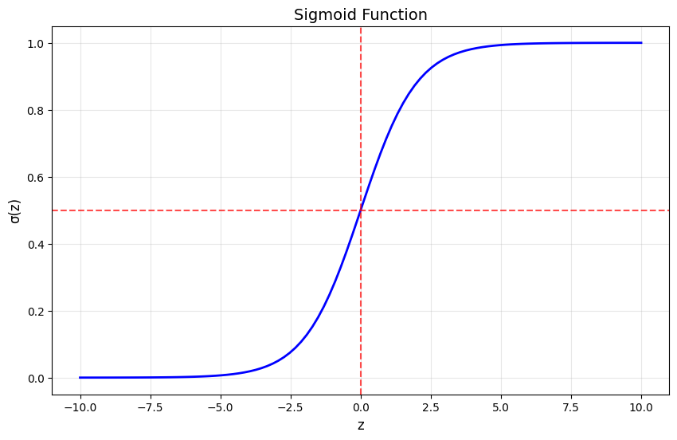
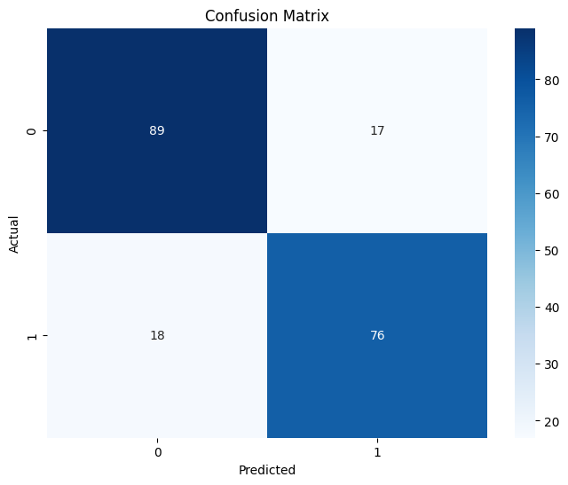
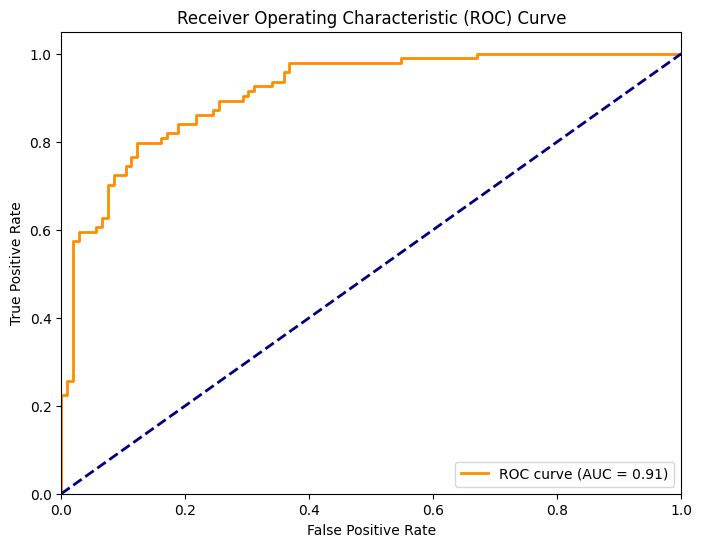
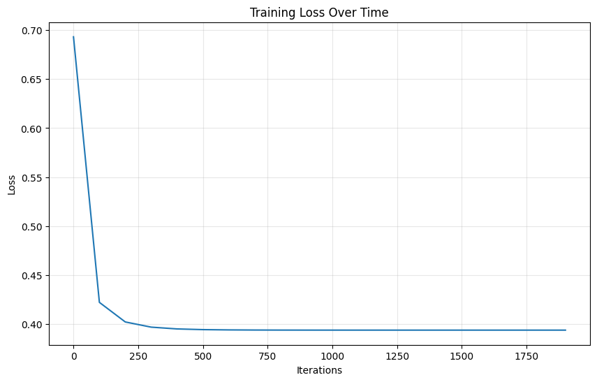
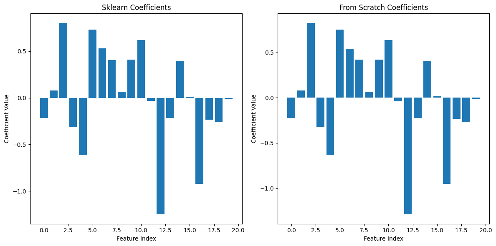
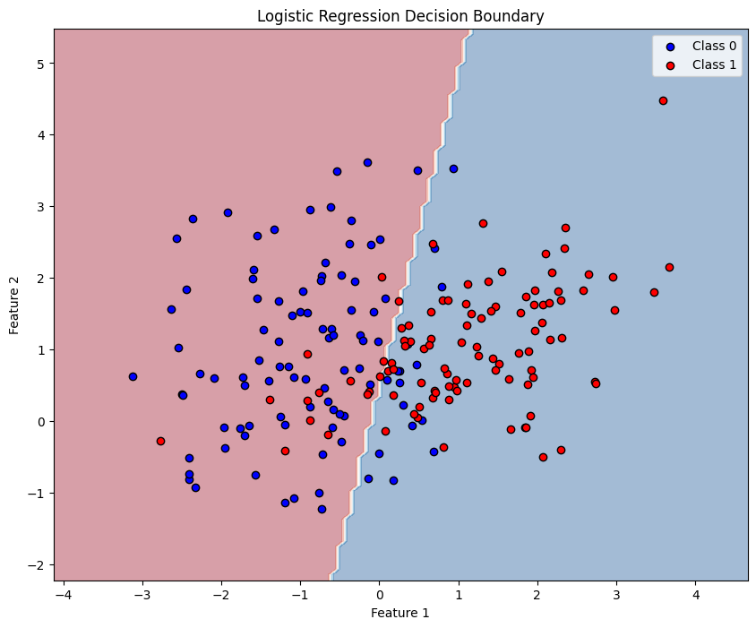

This notebook provides a comprehensive introduction to logistic regression, covering:
While linear regression works well for predicting continuous values, it's not suitable for classification problems. Logistic regression extends linear regression to handle binary classification tasks.
The core of logistic regression is the logistic (sigmoid) function:
This function maps any real-valued input to a value between 0 and 1, making it perfect for probability estimation.
import numpy as np
import matplotlib.pyplot as plt
import pandas as pd
from sklearn.datasets import make_classification
from sklearn.model_selection import train_test_split
from sklearn.preprocessing import StandardScaler
from sklearn.linear_model import LogisticRegression
from sklearn.metrics import accuracy_score, classification_report, confusion_matrix
import seaborn as sns
# Set random seed for reproducibility
np.random.seed(42)
# Visualize the sigmoid function
def sigmoid(z):
return 1 / (1 + np.exp(-z))
z = np.linspace(-10, 10, 100)
plt.figure(figsize=(10, 6))
plt.plot(z, sigmoid(z), 'b-', linewidth=2)
plt.grid(True, alpha=0.3)
plt.xlabel('z', fontsize=12)
plt.ylabel('σ(z)', fontsize=12)
plt.title('Sigmoid Function', fontsize=14)
plt.axhline(y=0.5, color='r', linestyle='--', alpha=0.7)
plt.axvline(x=0, color='r', linestyle='--', alpha=0.7)
plt.show()

In logistic regression, we model the probability of the positive class (y=1) as:
Where:
We use the binary cross-entropy (log loss) as our cost function:
Where:
To minimize the cost function, we use gradient descent. The gradients are:
The update rules are:
Where is the learning rate.
Let's implement logistic regression using scikit-learn on a synthetic dataset.
# Generate synthetic data
X, y = make_classification(n_samples=1000, n_features=20, n_informative=15,
n_redundant=5, random_state=42, n_classes=2)
# Split the data
X_train, X_test, y_train, y_test = train_test_split(X, y, test_size=0.2, random_state=42)
# Scale the features
scaler = StandardScaler()
X_train_scaled = scaler.fit_transform(X_train)
X_test_scaled = scaler.transform(X_test)
# Create and train the model
log_reg = LogisticRegression(random_state=42)
log_reg.fit(X_train_scaled, y_train)
# Make predictions
y_pred = log_reg.predict(X_test_scaled)
y_pred_proba = log_reg.predict_proba(X_test_scaled)[:, 1]
# Evaluate the model
print("Accuracy:", accuracy_score(y_test, y_pred))
print("\nClassification Report:")
print(classification_report(y_test, y_pred))
Accuracy: 0.825
Classification Report:
precision recall f1-score support
0 0.83 0.84 0.84 106
1 0.82 0.81 0.81 94
accuracy 0.82 200
macro avg 0.82 0.82 0.82 200
weighted avg 0.82 0.82 0.82 200
/Users/lexai/Library/Python/3.9/lib/python/site-packages/sklearn/linear_model/_linear_loss.py:200: RuntimeWarning: divide by zero encountered in matmul
raw_prediction = X @ weights + intercept
/Users/lexai/Library/Python/3.9/lib/python/site-packages/sklearn/linear_model/_linear_loss.py:200: RuntimeWarning: overflow encountered in matmul
raw_prediction = X @ weights + intercept
/Users/lexai/Library/Python/3.9/lib/python/site-packages/sklearn/linear_model/_linear_loss.py:200: RuntimeWarning: invalid value encountered in matmul
raw_prediction = X @ weights + intercept
/Users/lexai/Library/Python/3.9/lib/python/site-packages/sklearn/linear_model/_linear_loss.py:330: RuntimeWarning: divide by zero encountered in matmul
grad[:n_features] = X.T @ grad_pointwise + l2_reg_strength * weights
/Users/lexai/Library/Python/3.9/lib/python/site-packages/sklearn/linear_model/_linear_loss.py:330: RuntimeWarning: overflow encountered in matmul
grad[:n_features] = X.T @ grad_pointwise + l2_reg_strength * weights
/Users/lexai/Library/Python/3.9/lib/python/site-packages/sklearn/linear_model/_linear_loss.py:330: RuntimeWarning: invalid value encountered in matmul
grad[:n_features] = X.T @ grad_pointwise + l2_reg_strength * weights
/Users/lexai/Library/Python/3.9/lib/python/site-packages/sklearn/utils/extmath.py:203: RuntimeWarning: divide by zero encountered in matmul
ret = a @ b
/Users/lexai/Library/Python/3.9/lib/python/site-packages/sklearn/utils/extmath.py:203: RuntimeWarning: overflow encountered in matmul
ret = a @ b
/Users/lexai/Library/Python/3.9/lib/python/site-packages/sklearn/utils/extmath.py:203: RuntimeWarning: invalid value encountered in matmul
ret = a @ b
/Users/lexai/Library/Python/3.9/lib/python/site-packages/sklearn/utils/extmath.py:203: RuntimeWarning: divide by zero encountered in matmul
ret = a @ b
/Users/lexai/Library/Python/3.9/lib/python/site-packages/sklearn/utils/extmath.py:203: RuntimeWarning: overflow encountered in matmul
ret = a @ b
/Users/lexai/Library/Python/3.9/lib/python/site-packages/sklearn/utils/extmath.py:203: RuntimeWarning: invalid value encountered in matmul
ret = a @ b
# Visualize the confusion matrix
plt.figure(figsize=(8, 6))
cm = confusion_matrix(y_test, y_pred)
sns.heatmap(cm, annot=True, fmt='d', cmap='Blues')
plt.title('Confusion Matrix')
plt.ylabel('Actual')
plt.xlabel('Predicted')
plt.show()
# ROC Curve
from sklearn.metrics import roc_curve, auc
fpr, tpr, thresholds = roc_curve(y_test, y_pred_proba)
roc_auc = auc(fpr, tpr)
plt.figure(figsize=(8, 6))
plt.plot(fpr, tpr, color='darkorange', lw=2, label=f'ROC curve (AUC = {roc_auc:.2f})')
plt.plot([0, 1], [0, 1], color='navy', lw=2, linestyle='--')
plt.xlim([0.0, 1.0])
plt.ylim([0.0, 1.05])
plt.xlabel('False Positive Rate')
plt.ylabel('True Positive Rate')
plt.title('Receiver Operating Characteristic (ROC) Curve')
plt.legend(loc="lower right")
plt.show()


Now let's implement logistic regression from scratch to better understand how it works.
class LogisticRegressionScratch:
def __init__(self, learning_rate=0.01, n_iterations=1000):
self.learning_rate = learning_rate
self.n_iterations = n_iterations
self.weights = None
self.bias = None
self.losses = []
def _sigmoid(self, z):
"""Sigmoid activation function"""
return 1 / (1 + np.exp(-z))
def _compute_loss(self, y_true, y_pred):
"""Compute binary cross-entropy loss"""
# Clip predictions to avoid log(0)
epsilon = 1e-15
y_pred = np.clip(y_pred, epsilon, 1 - epsilon)
# Binary cross-entropy
loss = -np.mean(y_true * np.log(y_pred) + (1 - y_true) * np.log(1 - y_pred))
return loss
def fit(self, X, y):
"""Train the logistic regression model"""
n_samples, n_features = X.shape
# Initialize parameters
self.weights = np.zeros(n_features)
self.bias = 0
# Gradient descent
for i in range(self.n_iterations):
# Linear model
linear_pred = np.dot(X, self.weights) + self.bias
# Apply sigmoid
y_pred = self._sigmoid(linear_pred)
# Compute gradients
dw = (1 / n_samples) * np.dot(X.T, (y_pred - y))
db = (1 / n_samples) * np.sum(y_pred - y)
# Update parameters
self.weights -= self.learning_rate * dw
self.bias -= self.learning_rate * db
# Compute and store loss
if i % 100 == 0:
loss = self._compute_loss(y, y_pred)
self.losses.append(loss)
def predict_proba(self, X):
"""Predict probabilities"""
linear_pred = np.dot(X, self.weights) + self.bias
return self._sigmoid(linear_pred)
def predict(self, X, threshold=0.5):
"""Predict class labels"""
y_pred_proba = self.predict_proba(X)
return (y_pred_proba >= threshold).astype(int)
# Train our custom implementation
log_reg_scratch = LogisticRegressionScratch(learning_rate=0.1, n_iterations=2000)
log_reg_scratch.fit(X_train_scaled, y_train)
# Make predictions
y_pred_scratch = log_reg_scratch.predict(X_test_scaled)
# Evaluate
print("Accuracy (from scratch):", accuracy_score(y_test, y_pred_scratch))
print("Accuracy (sklearn):", accuracy_score(y_test, y_pred))
Accuracy (from scratch): 0.825
Accuracy (sklearn): 0.825
# Plot the loss curve
plt.figure(figsize=(10, 6))
plt.plot(range(0, log_reg_scratch.n_iterations, 100), log_reg_scratch.losses)
plt.xlabel('Iterations')
plt.ylabel('Loss')
plt.title('Training Loss Over Time')
plt.grid(True, alpha=0.3)
plt.show()
# Compare coefficients
plt.figure(figsize=(12, 6))
plt.subplot(1, 2, 1)
plt.bar(range(len(log_reg.coef_[0])), log_reg.coef_[0])
plt.title('Sklearn Coefficients')
plt.xlabel('Feature Index')
plt.ylabel('Coefficient Value')
plt.subplot(1, 2, 2)
plt.bar(range(len(log_reg_scratch.weights)), log_reg_scratch.weights)
plt.title('From Scratch Coefficients')
plt.xlabel('Feature Index')
plt.ylabel('Coefficient Value')
plt.tight_layout()
plt.show()


Let's create a simple 2D example to visualize the decision boundary.
# Create a simple 2D dataset
X_2d, y_2d = make_classification(n_samples=200, n_features=2, n_redundant=0,
n_informative=2, n_clusters_per_class=1,
random_state=42)
# Train logistic regression
log_reg_2d = LogisticRegression()
log_reg_2d.fit(X_2d, y_2d)
# Create a mesh to plot decision boundary
x_min, x_max = X_2d[:, 0].min() - 1, X_2d[:, 0].max() + 1
y_min, y_max = X_2d[:, 1].min() - 1, X_2d[:, 1].max() + 1
xx, yy = np.meshgrid(np.linspace(x_min, x_max, 100),
np.linspace(y_min, y_max, 100))
# Predict on the mesh
Z = log_reg_2d.predict(np.c_[xx.ravel(), yy.ravel()])
Z = Z.reshape(xx.shape)
# Plot
plt.figure(figsize=(10, 8))
plt.contourf(xx, yy, Z, alpha=0.4, cmap='RdBu')
plt.scatter(X_2d[y_2d == 0, 0], X_2d[y_2d == 0, 1],
c='blue', label='Class 0', edgecolors='black')
plt.scatter(X_2d[y_2d == 1, 0], X_2d[y_2d == 1, 1],
c='red', label='Class 1', edgecolors='black')
plt.xlabel('Feature 1')
plt.ylabel('Feature 2')
plt.title('Logistic Regression Decision Boundary')
plt.legend()
plt.show()
/Users/lexai/Library/Python/3.9/lib/python/site-packages/sklearn/utils/extmath.py:203: RuntimeWarning: divide by zero encountered in matmul
ret = a @ b
/Users/lexai/Library/Python/3.9/lib/python/site-packages/sklearn/utils/extmath.py:203: RuntimeWarning: overflow encountered in matmul
ret = a @ b
/Users/lexai/Library/Python/3.9/lib/python/site-packages/sklearn/utils/extmath.py:203: RuntimeWarning: invalid value encountered in matmul
ret = a @ b

Logistic regression is a linear model for binary classification that uses the sigmoid function to map outputs to probabilities.
The cost function is binary cross-entropy, which penalizes wrong predictions more severely than correct ones.
Gradient descent is used to optimize the parameters by minimizing the cost function.
The decision boundary in logistic regression is linear (a straight line in 2D, a hyperplane in higher dimensions).
Feature scaling is important for logistic regression as it helps with convergence.
Logistic regression provides probability estimates, not just class predictions, which can be useful for understanding prediction confidence.